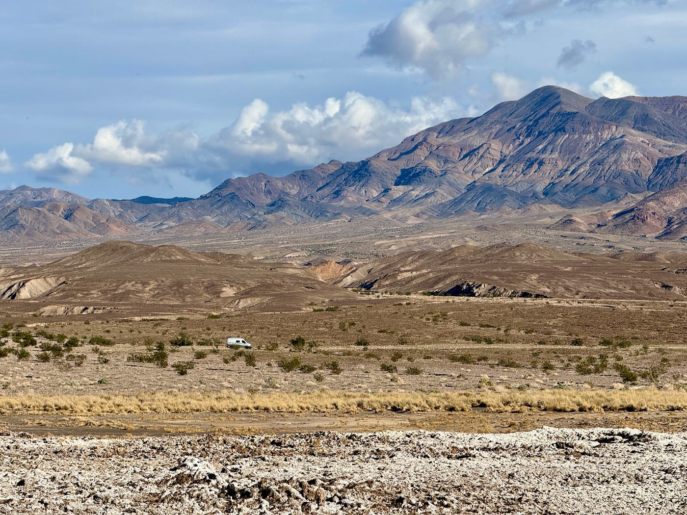
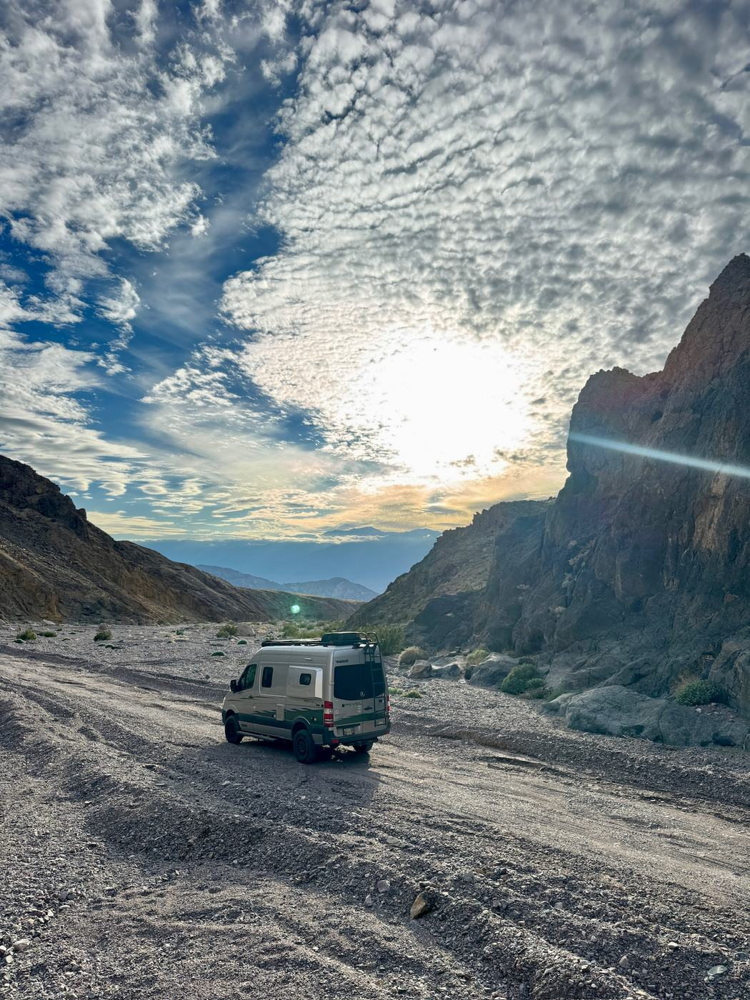
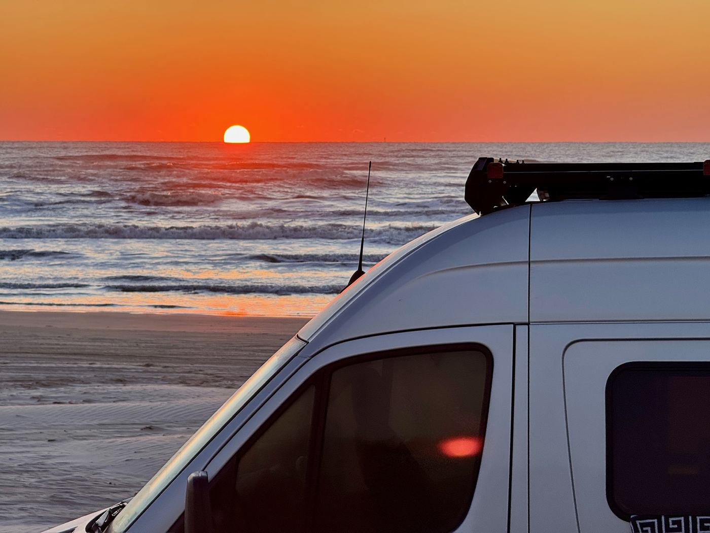

Small van, enormous valley
Death Valley has a way of resetting your sense of scale. The road keeps running, the ridgelines keep multiplying, and our little van becomes a white punctuation mark in the desert.
See the Death Valley set →
David, Cassie & one well-traveled van
We’re collecting the places that reward a slower look—the canyon tracks, coastal pull-offs and campsites worth remembering.
01 Driving into Echo Canyon · Death Valley, California
Welcome to the logbook
We’re David and Cassie. Home, for stretches at a time, is a compact van with a big windshield and just enough room for two. We travel to pay attention—not to race through a checklist.
This is our working logbook: real camps, roads we’d drive again, and the little moments between destinations that become the best part of a trip.
Fresh from the road
Three early dispatches from desert tracks, Pacific cliffs and the Gulf shore.

Death Valley has a way of resetting your sense of scale. The road keeps running, the ridgelines keep multiplying, and our little van becomes a white punctuation mark in the desert.
See the Death Valley set →
The road curled below us while the last light settled over the water. Some campsites are simply a place to stop; this one was the destination.

Park on the sand, listen to the surf, and let the horizon keep time. Mustang Island gave us one of those brilliant orange bookends to a day on the road.
The first roll
Tap any image to open it. These are the first real photographs in our travel journal.
All nine photographs are included across the page—three field notes and six gallery moments.
Where these roads meet
Our first collection follows the Gulf from Mustang Island, crosses Arizona’s grasslands and desert passes, drops into Death Valley, and reaches the Pacific along Highway 1.
Our story · Draft one
Two curious travelers, one capable van, and a growing preference for the road that takes a little longer.
We believe travel is at its best when there’s room for wrong turns, quiet mornings and a campsite you didn’t know existed. We’re building this journal to share what we discover—and to remember how each place felt when we arrived.
This is our first working version. The details will grow with every trip, but the idea is already simple: go slowly, look closely, and bring a good story home.
— David & Cassie
Postcards from wherever
Occasional notes from the road—new camps, honest lessons and the views that made us pull over.
MVP preview: signup connection comes next.